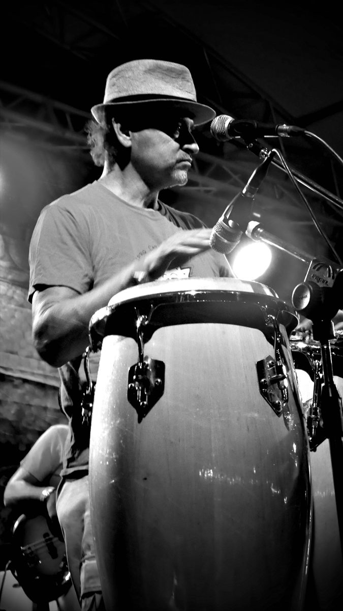

Luis Fernando Giraldo Bedoya
Nasce il 5 febbraio 1966 a Pereira, Colombia. Intraprende presto lo studio delle percussioni afro-caraibiche viaggiando nelle diverse regioni del Paese; dal 1986 al 1997 è parte del gruppo Lumbalù, progetto che diffonde la cultura afro-colombiana in Colombia e poi in Spagna.
Nel 1997 si trasferisce a Barcellona e quindi a Treviso, dove vive e insegna percussione afro-colombiana e latinoamericana. Nel 2011 fonda Mestisòn, di cui è direttore artistico e musicale.
Leggi la biografia completa
Istruzione
Consegue il diploma di maturità classica nel 1986 presso il liceo “Juvenal Cano Moreno” di Pereira, Colombia. Dal 1992 al 1995 frequenta corsi di formazione universitaria presso la Facoltà di Belle Arti e Umanità dell’Università Tecnologica di Pereira; in particolare partecipa al corso di percussione afro-cubana e caraibica con il maestro Felix Lopez. Studia percussione africana da privatista e come autodidatta.
Esperienze lavorative
Dal 1987 al 1994 insegna percussione latinoamericana e afro-colombiana presso diversi enti di Pereira, tra cui il Museo de Arte Post Moderno Laura Lopez, il S.E.N.A. e la Corporazione Culturale El Solar. In Italia prosegue come insegnante privato di percussione afro-colombiana e latinoamericana dal 2000 a oggi, soprattutto a Treviso.
Breve storia
Con Lumbalù partecipa a numerosi festival:
- Festival Nacional de Gaitas (Sucre), 1992 – primo premio
- Festival Nacional de Pito Atravesao (Sucre), 1994 – primo premio
- Festival Nacional de Baile Cantao (Bolívar), 1996 – invitati speciali
- Festival Internacional de la Canción de Puerto Rico, 1994 – in rappresentanza della Colombia
- Caravanne des Quartiers – Galicia Tropical (Lione, Francia), 1997 – ospiti di Manu Chao
- Festival de Música del Mundo (Barcellona), 1997 – ospiti speciali
- Festival Internacional de Músicas Populares del Mundo (Barcellona), 1997 – ospiti speciali
Dal 1998 al 2005 collabora come percussionista con diverse formazioni, tra cui Orquestra Revolución Latina, Latinos del Mundo e Titikò. Nel 2011 partecipa alla realizzazione dell’album L’amore per gli altri diventa musica (progetto ADVAR) insieme a Tolo Marton e Marco Dalla Pietra. Nello stesso anno fonda Mestisòn, con cui partecipa a Suoni di Marca 2011 come gruppo di supporto a Buena Vista Social Club.